底片（英文：film),又叫做菲林。
底片是將鹵化銀塗抹在聚乙酸酯片基上，此種底片為軟性，捲成整捲使用，所以又稱膠捲。
當有光線照射到鹵化銀上時，鹵化銀轉變為黑色的銀，經顯影後固定於底片，成為我們常見到黑白負片。
底片殼上的數字就是對應到數位相機的感光度。
底片如需要中長期保存，最適合的環境為「低溫低壓」，以防膠卷乾燥。
每種底片有不同的保存條件，但基本上都需要存放在15度以下、濕度50%的環境，在家中最近以上條件的地方就是冰箱。
不過拍攝前注意不要降到常溫，因為水氣會凝結。
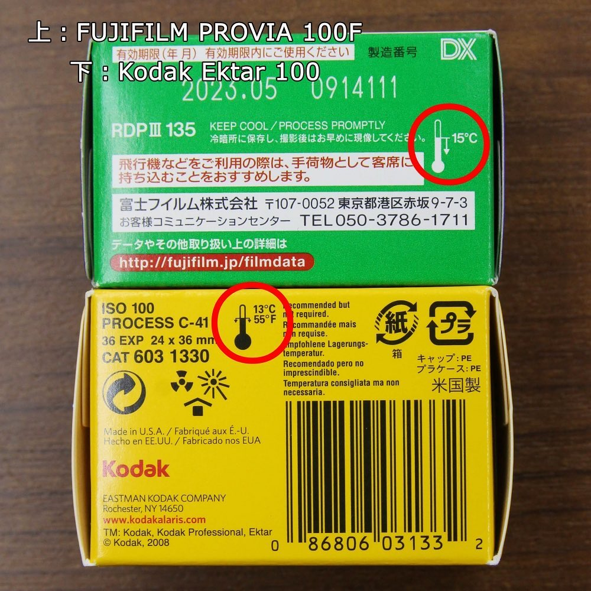 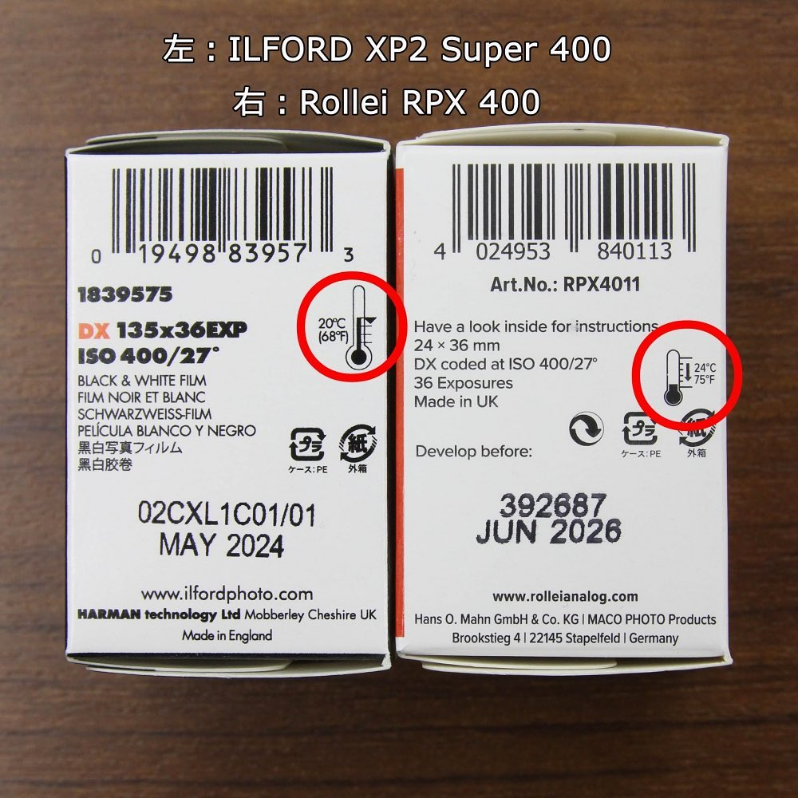
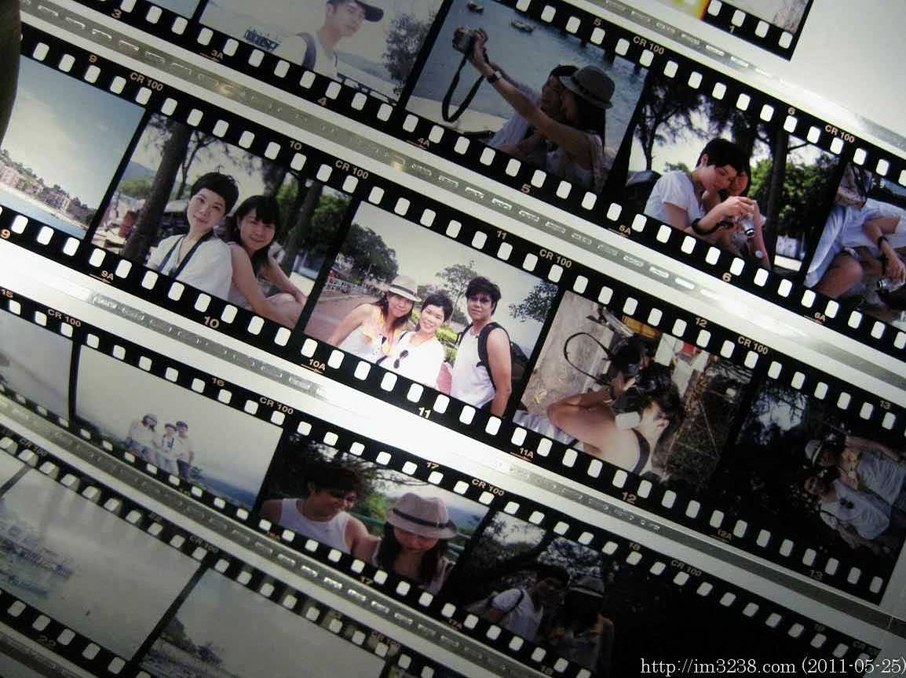
價格較高、較難取得，拍攝後顏色、明暗與現實相同，沖洗後顏色與原物相同，其寬容度較負片小。
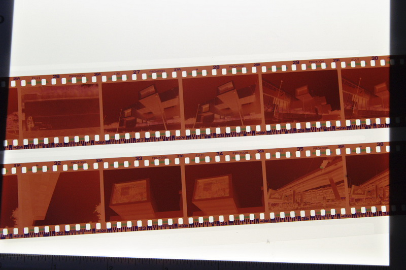
最普通、最常見也是最便宜的一種底片 ，拍攝後會得到反轉的負像，無論明暗、色調都與現實相反，沖洗後的底片通常會呈現啡色，其寬容度較正片大。
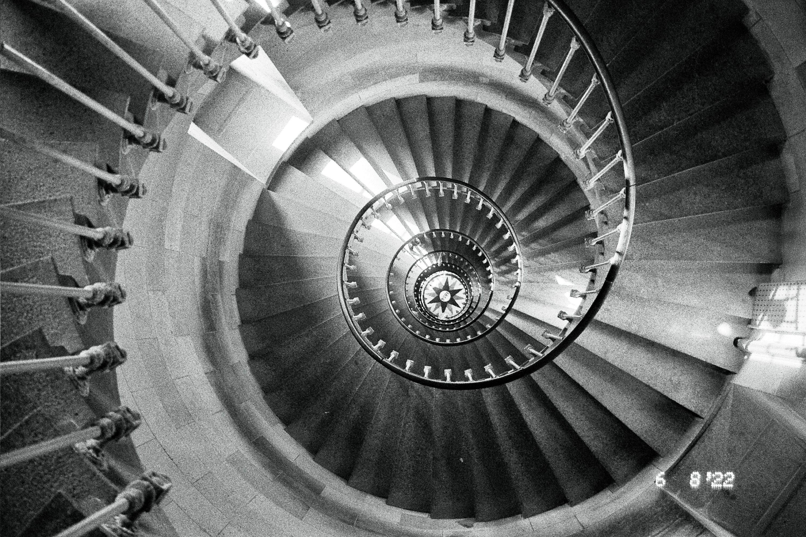
原理:光線照射到鹵化銀上時，鹵化銀轉變為黑色的銀，經顯影後固定於底片。黑白片亦有正片、負片之別。
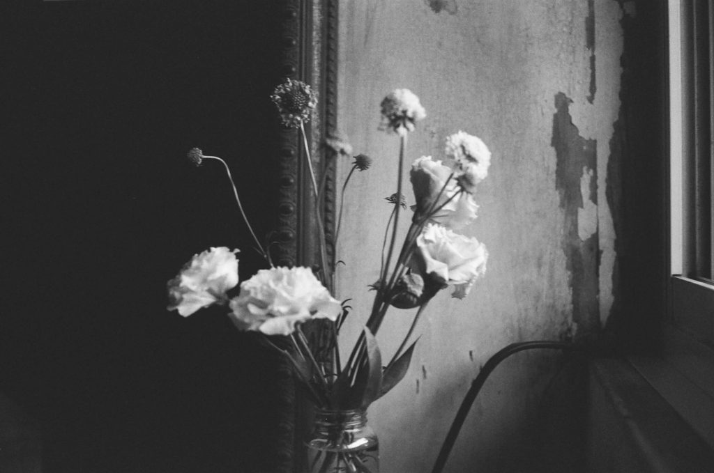 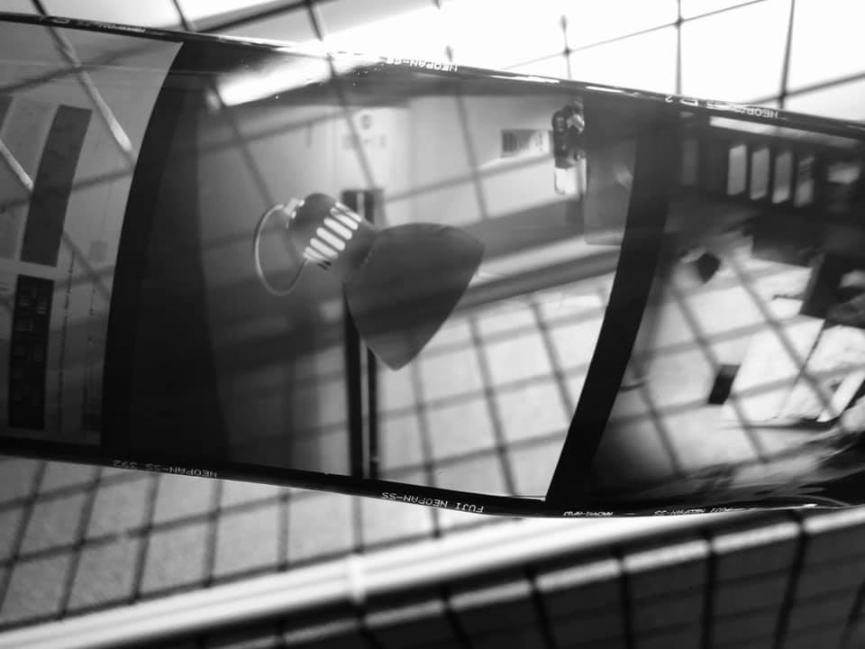
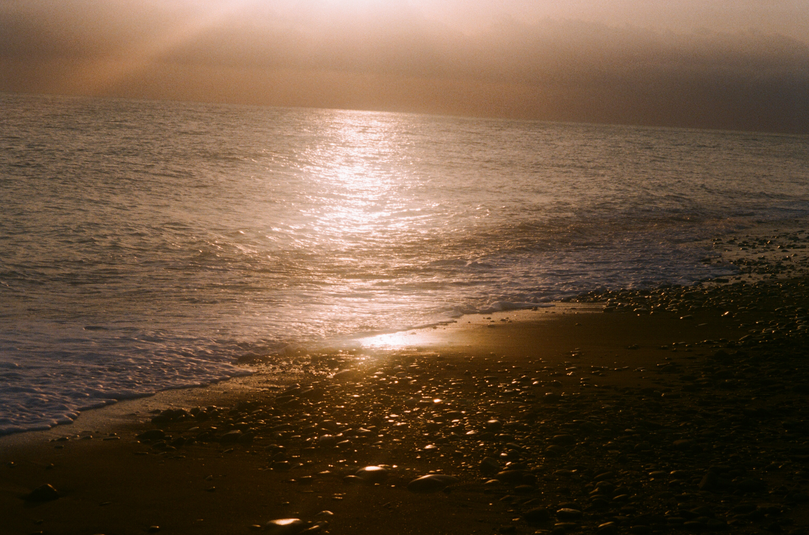
原理:塗抹三層鹵化銀以表現紅、綠、藍色光三原色。
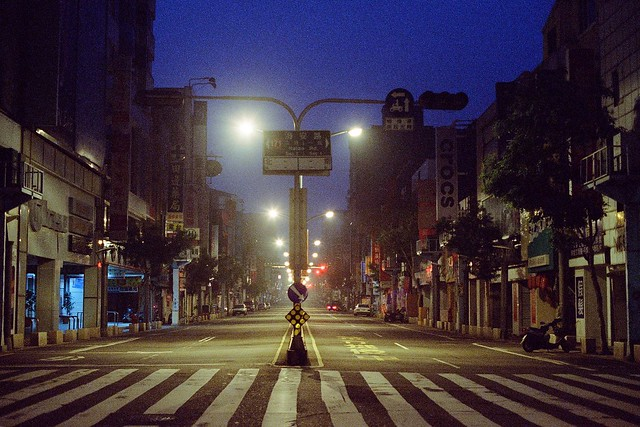
電影底片一樣有正片負片之分，其寬容度更高，拍攝出來的影像與肉眼所看到的相近。
電影底片為了讓捲片更順利，會在膠卷上塗上一層石墨，所以也獨特的沖洗方式，費用也較高。
電影底片皆是整捲出售，所以市面上的皆是分裝片。
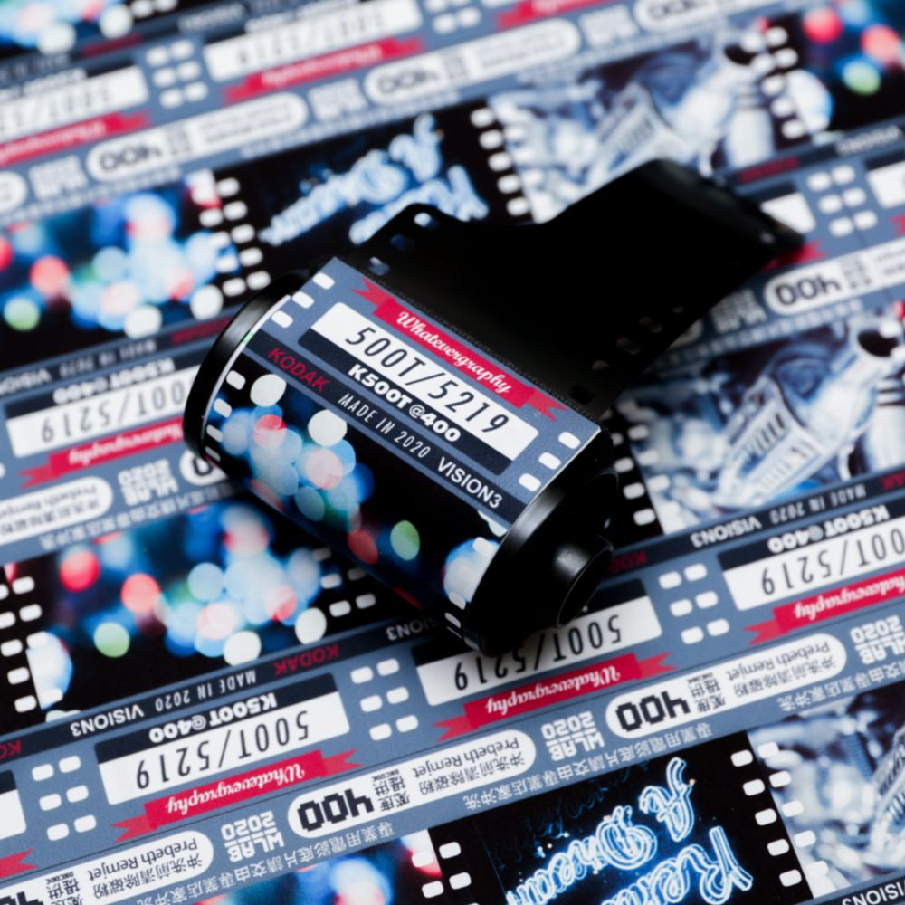 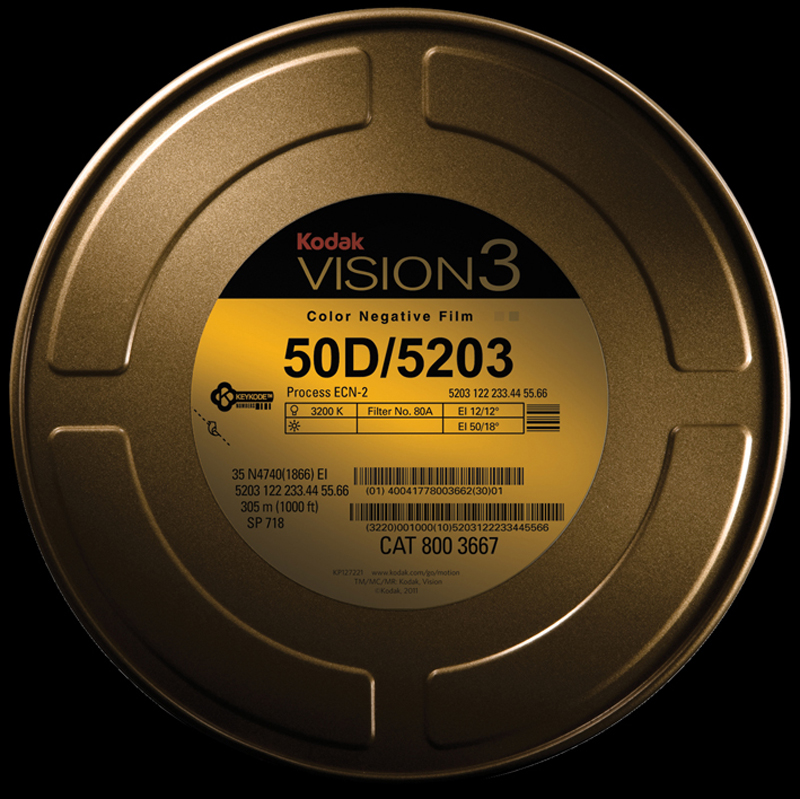
顏色經過潤飾，和肉眼所見較不同，在強光時不會產生色偏，使用一般的沖洗方式即可。
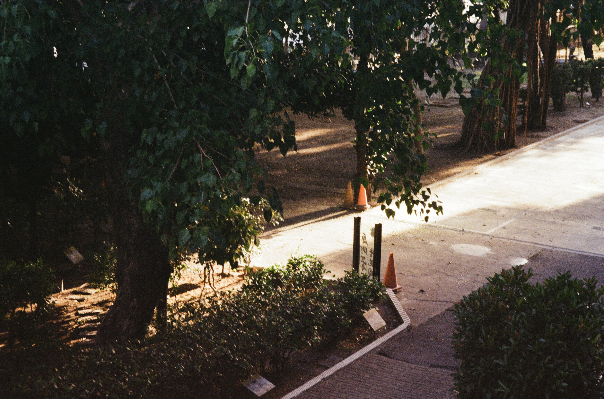
價格較低廉，通常顯色等會較專業片些微粗糙，但也並無太大差異。
專業片在色調、顆粒上都有卓越的表現，簡單分辨的方式就是價格，專業片通常比較貴，除了價格外，專業片的包裝上會寫上Professional的字樣。

Feature-暖色系且顆粒感十足，高對比度的鮮豔色彩，且光影呈現效果優異，配上偏暖紅色系的色調特色，相當適合用於溫暖飽和的人像作品拍攝。
![Fuji](data:image/png;base64,iVBORw0KGgoAAAANSUhEUgAAAOEAAADhCAMAAAAJbSJIAAAAllBMVEUAonP///9GtZE1sIkApngAn24AoXAAnGnWFi8AmmZ2xKmv3c6d0Lvk9vHz+via1MDA5NggpnqLzbdcvJzK6d+GybBGr4neACk6lmzBMzoAm3CCxavTFC/q9/MApXkmrIOvPj+SzLan2M
d6x6u54NHY7+jEMDhWupgAlVuZU0l7aFVOhGS6Mzohl23d8erhAB1pb1d2m4MxlsQtAAAE3klEQVR4nO2d23biNhhGDVhSDI0JGJK2GcKEQ+n0QNv3f7laR8vYM4nBWeRjffsiK9bp17ZlSbYvSIrRjZMM5Y1TGiY3Dg3xoSE+NMSHhvjQEB8a4kNDfGiIDw3xoSE+NMSHhvjQEB8a4kNDfGiIDw3xoSE+NM
SHhvjQEB8a4kNDfGiIDw3xoSE+NMSHhvjQEB8a4kNDfGiIDw3xoSE+NMSHhvjQEB8a4kNDfGiIDw3xoSE+NMSHhvjQEB8a4vPpDN/bn3f3u2GoVHrCS6rTRWKP4qJpI8mUrCenv1p+EMGWlScVXbGXE7OWqFLVW/qhoZzkgwZrmcjC/T8Xoac7lzSrtZCubOqDssdf776U3P3iYsvZQzPASmesXeSJragm
LrPWQ7l2zYf2y7TRfdVU49qeGIpNM7wxFNOGofTnomYoxvUe/Px0Z/CGatESII8rOsPMZ4pa86+hThZOdST4tuHxow2TljHSxfCnuFe2H6O4qTcNw+nYLCt0Rl+Gs9CXaRVgLM8wHLsMsT3LcJKJij4NX3xXllEEmZxh6MpV8
0E3w62ol+vf8HSO62BoJ5u9M8x0n3PfmXcbLj+zYVHLSE00fyFvw3B4jFqw9Z79GnQbhge7pr2aHGUOZtc3/E32aGiH6cIUVOaC/n51w6dvfd6HwmSsbAsm2
NUNn/4I21Rf6xLDbG9y9JovD6a7WWfDbaYCl6+HX/4M22m/vx2Moggd18MiszeiXvNtxx67Gx4XFVVD5xk+/fV3EFz6fg/2UYRhtz1N4c6TLqn05cyV6mwYM7/M8OlbqCF2Lc3rLnc0FIm9DHrznZtYYUN/BcN//tW/wSC1
w7qt9XMMpb0R8zSRQ/3PUnQ3XN0HVtuLDP8bPhr0Y5xuddASoesolW57epD2aWokuxtu1cm++ExD+eiFlB6lQqS+46PTCF0M7QxarvnGrFw2uhv2tlrEhrpSL+uhdIvOg
xL2NryioTwx7GfFl3YKLZ/zH11nb8/Q9Wf2rP+urzNKdx9qaOfQQaGXH717uz1D975nqvurR8s1DG3BDzO0Sivf1x4M/XZrWmU4w1W94KsreJAfali9VjQb8MsN3bj3g0+zdil7FRf0oXJX73LDWrlgWL1DXGVJH4aJclcsvIgNm+haUeHPxEb1ZTjOoo1BdR8Kf5OYSbsHwzBMd+XjlJQiO7j
jXLdgfwFMqOzgT4SrdoFheHW8eXaMZWQYnJ5FP4ZJeD7JJ+OimO99/IN5DC0pxttNeGU+8i+kzzZsef1/VPE1nMeh+jD8zjeNwoyRfT3xfu2rn28Y7vyKfWzo823DnQ1X60bJspVh47TurErdMJ/LUDsYbpzzzA2+Y+MEesPwtr4RbuEM7TRtZ4bcHbiy08aVOT2TL/abnWj9ACmz9Xa394vEY
jJOlS0XvoSVqZtC1KK4z3qqfpyqpIErWS24SqQ1fCkZlVeyvfJ3Dd+gnExUpoxsZl/gWGyiSW0/OXEbnSJezKf7yt07NMSHhvjQEB8a4kNDfGiIDw3xoSE+NMSHhvjQEB8a4kNDfGiIDw3xoSE+NMSHhvjQEB8a4kNDfGiIDw3xoSE+NMSHhvjQEB8a4kNDfGiIDw3xoSE+NMSHhvjQEB8a4kNDfGiIDw3
xoSE+NMSHhvjQEB8a4kNDfGiIDw3h+R8EAGkwkB7O0wAAAABJRU5ErkJggg==)
Feature-色調偏綠散發日系風格，色彩飽和度偏低、顆粒感細微的特色，因此在照片細節的呈現上十分完整。底片種類繁多，為當年專業片中的王者。

Feature-充滿質感的濃烈色彩，對於亮色的感光度更高，因此整體顏色濃烈且偏暖，尤其是在光線充足的環境之下，其發色表現更佳，不少人會運用於戶外景象與人像攝影上。